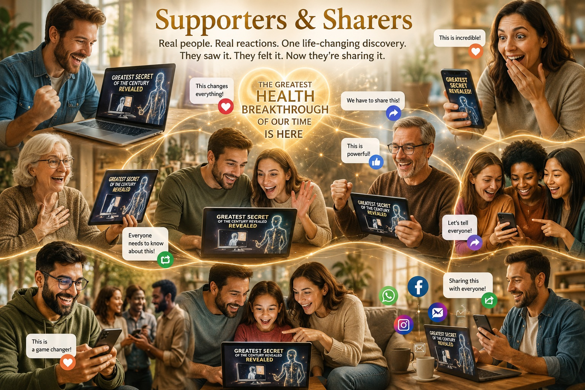
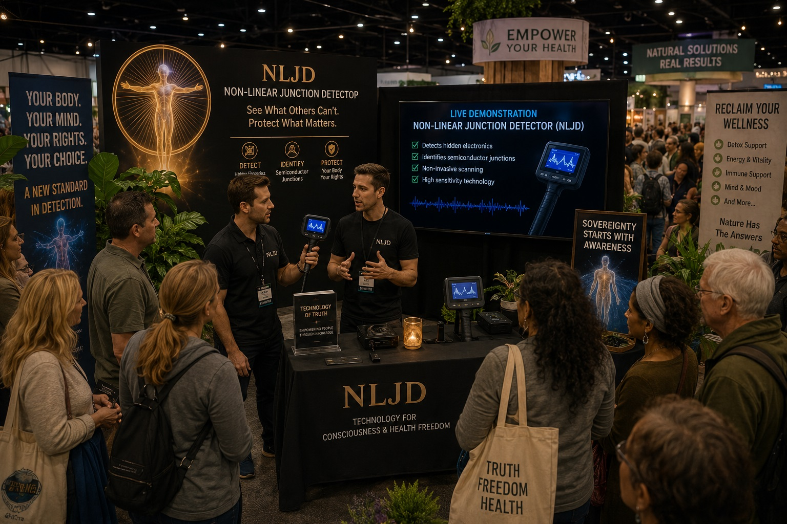
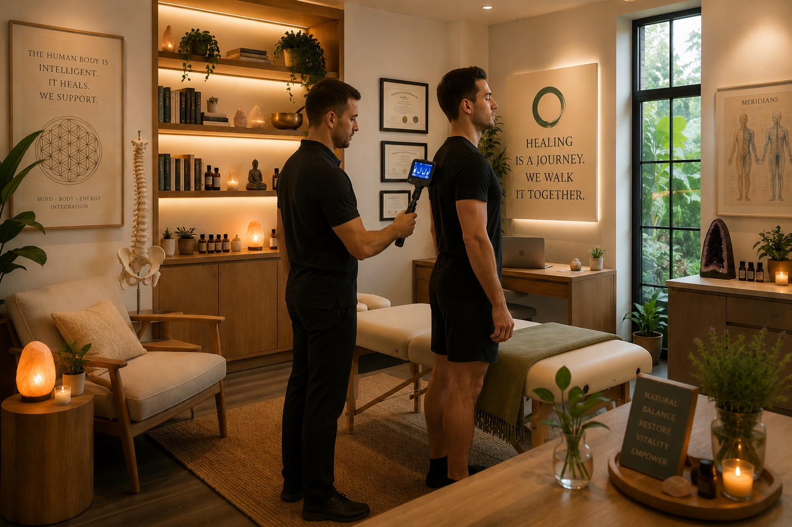
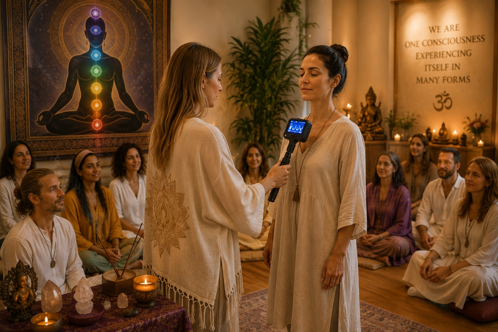
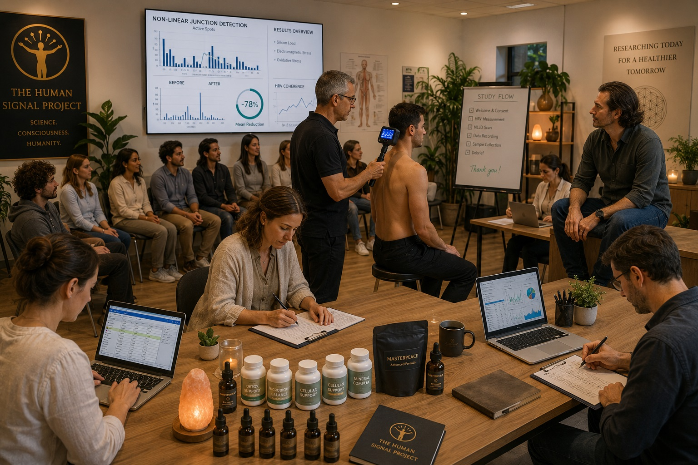
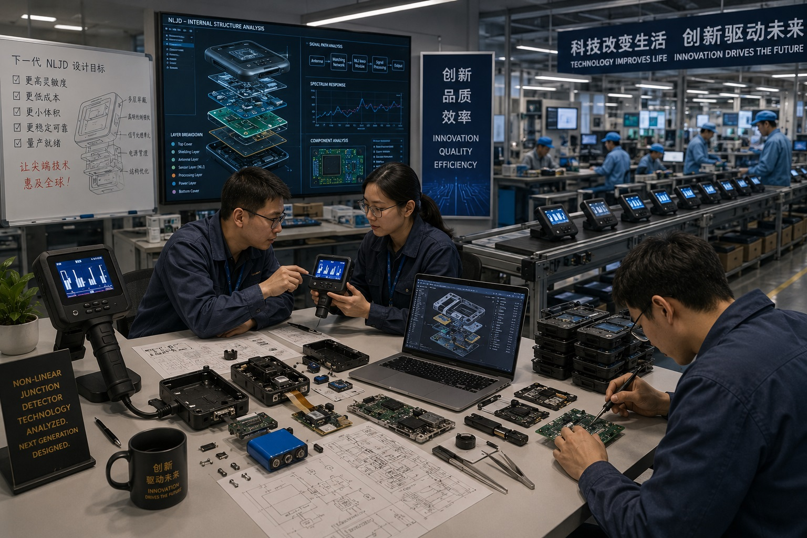

1
Supporters & Sharers

You don't need any expertise. You only need to care.
Every person who shares this information becomes, in that moment, a leader within their own circle — the first person to bring real, research-based knowledge to people they love. This isn't fear-mongering; it's a solid foundation backed by official U.S. government acknowledgement of the Havana Syndrome and our own independent study. When you share it, you're not just raising an alarm — you're also offering a solution already proven to work with an 85% success rate in 60 days.
2
Content Creators, Journalists, Podcasters & Show Hosts
A topic your audience has never heard — backed by real evidence, real data, and a live demonstration.
This subject offers something most content creators are desperate for: a story with scientific grounding, dramatic stakes, and a genuine solution. You can bring on experts, run live demonstrations with non-linear junction detection technology, or interview those already doing the work. Two income streams open immediately — audience growth and engagement, and direct commission through referral links when your viewers choose the solution.
3
Entertainers
Transform your performance into an unforgettable revelation.
Magicians, stage performers, motivational speakers, and show hosts can incorporate live demonstrations into their performances to create moments of genuine surprise and wonder. Few things captivate an audience more than revealing something unexpected in real time while inviting people to question what they thought they knew about reality.
4
Demonstration Experts

Perhaps the single most exciting opportunity in this entire movement.
This is human connection at its rawest. When you test someone and the equipment reveals something it shouldn't find in a human body, you have an instant, authentic reason to talk, explore, support someone through a shocking discovery — and offer real relief through a proven solution. Multiple income streams exist here: testing fees, product commissions, and equipment sales commissions.
5
Health Practitioners & Clinic Owners

Deepen your relationship with every client you already have.
Whether you run a clinic, wellness studio, retreat, or private practice, this testing offers a way to connect with clients on a level few other services reach — revealing an unseen burden on their health and offering a validated path to address it. For practitioners already committed to wellbeing, this is an extension of the work you're already doing.
6
Spiritual & Consciousness Communities

The single most powerful entry point for spiritual awakening you may ever encounter.
Every spiritual tradition understands the importance of that first moment when someone's consciousness opens to the possibility of change. This testing creates exactly that moment — a tangible experience that invites a person to re-evaluate their beliefs, environment, and choices. It offers a bridge between the physical and the transcendent.
7
Product Developers — Detoxification & Recovery

If you believe in your formula, here is the proof you've been looking for.
If you have already developed — or believe you can develop — a product capable of helping the body clear this kind of technology, the path to proving it scientifically is now open. You can pursue this independently or in partnership with our team, with real testing and real results behind your name.
8
Electronics Producers

The market is small today. You can be the one who makes it large.
Non-linear junction detection equipment is currently built in tiny batches for high-end security and government use, which keeps prices extremely high. A manufacturer willing to produce this equipment at accessible prices could become the defining brand in a new category of consumer and professional health technology.
9
Legal Professionals
Where there is harm, there is also the right to justice — and to compensation.
As evidence mounts of how this technology entered human bodies — and by whom — the door opens for legal accountability. For legal professionals with the appetite and resources to pursue group compensation claims, this represents potential financial reward and a chance to restore public trust by holding responsible parties to account.
10
Community Leaders & Public Figures
An opportunity not for income, but for legacy.
For leaders of health organisations, spiritual communities, political movements, or nations, this is a chance to stand for something larger than any single policy: the right of every human being to a body and mind free from unwanted interference, open to genuine connection with nature, with others, and with the divine.